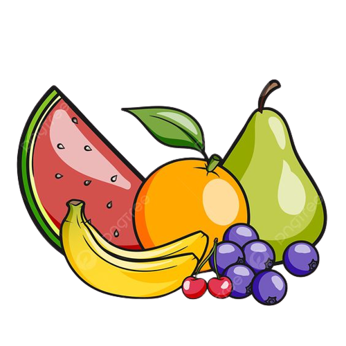
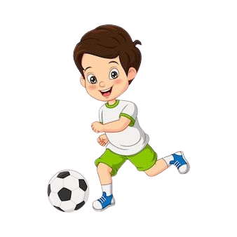
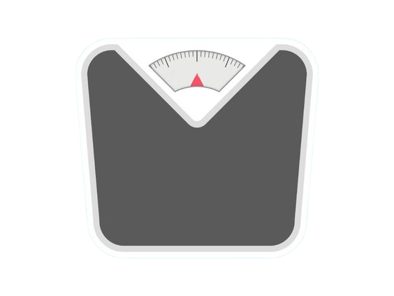

Pilihan Makanan Sehat
Memilih makanan sehat dan gizi seimbang merupakan langkah utama.
Konsumsi banyak buah, sayuran, biji-bijian utuh, protein berkualitas, dan lemak sehat. Ini membentuk dasar kesehatan Anda.
|

Aktivitas Fisik Teratur
Berolahraga secara teratur penting untuk menjaga kesehatan jantung, meningkatkan kebugaran fisik, mengontrol berat badan, dan mengurangi risiko penyakit kronis.
Aktivitas fisik harus menjadi bagian penting dari rutinitas harian Anda.
|

Pantau Konsumsi Kalori dan Berat Badan
Jika Anda memiliki tujuan berat badan atau peningkatan kesehatan yang terkait dengan berat badan,
penting untuk memantau asupan kalori Anda dan menjaga berat badan yang sehat. Konsumsi kalori harus seimbang dengan kebutuhan tubuh Anda.
|